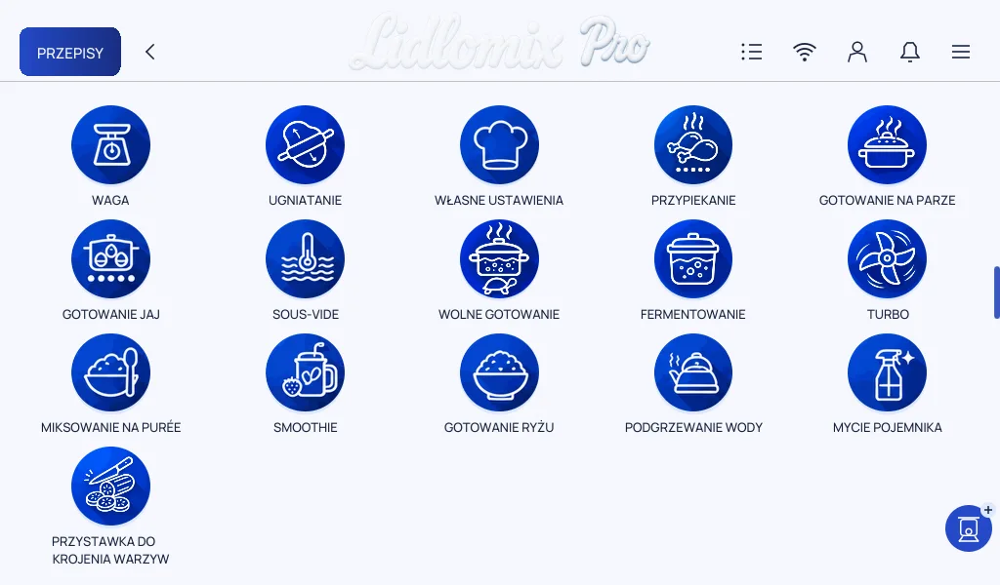
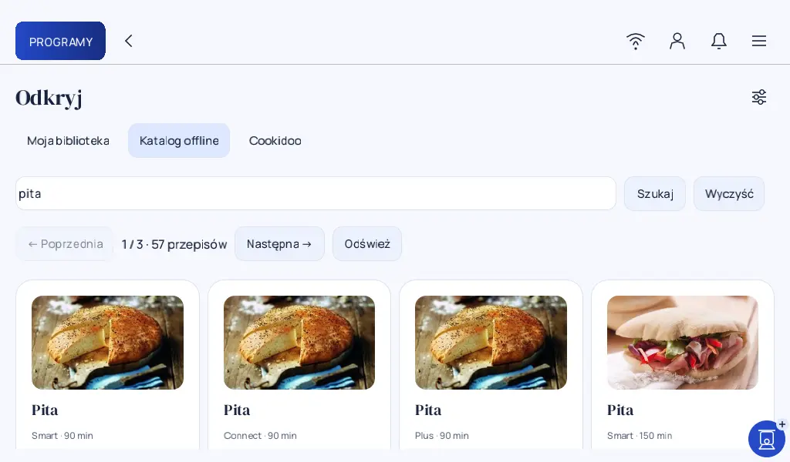

02 / Wydanie 0.15 ·
Dwie aplikacje na jednym Connect
Fabryczne Monsieur Cuisine i Lidlomix Pro na jednym urządzeniu. Zobacz ekran wyboru, menu i katalog offline.
1. Wybór aplikacji
Obie karty sprawdziłem po restarcie. Dziś wracam do wyboru gestem od prawej krawędzi ekranu. Restart też mogę uruchomić z menu.
2. Menu Lidlomix Pro

Ikony w głównym menu zaprojektowałem od nowa. Przy przystawce do krojenia pokazuję warzywa, żeby od razu było jasne, do czego służy. Ikony wewnątrz poszczególnych programów są jeszcze w trakcie projektowania i wdrażania.
3. Katalog offline

Kiedy przełączałem język fabrycznej aplikacji, zmieniała się też oferta przepisów. Zebrałem przepisy z różnych wersji krajowych w jednym katalogu, przetłumaczyłem je na polski i usunąłem duplikaty. Zachowałem warianty dla poszczególnych modeli. Przepisy uwzględniają opracowane wcześniej zasady dopasowania nastaw.
Na testowym Connect mam około 10 tys. przepisów zapisanych w urządzeniu. Wyszukiwanie i otwieranie kart działa bez internetu. Wyniki pojawiają się od razu z lokalnej bazy, bez czekania na pobieranie przepisu.
Komentarze
Komentarze są dostępne na GitHubie.
Otwórz wątek i skomentuj